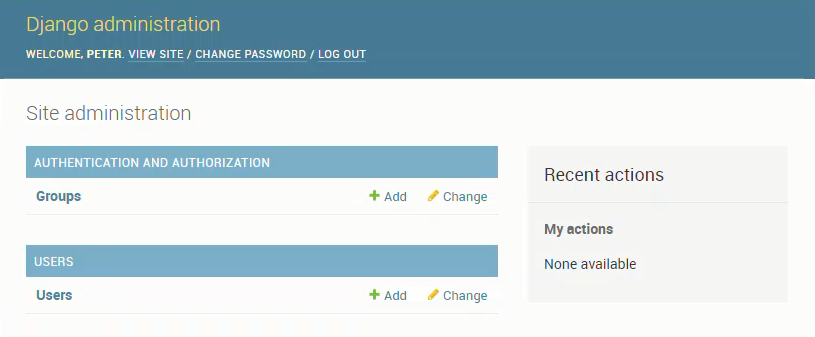

This is the 6th part of a multi-part series on building a web app with Python and Django. The web app will act as a resource for Engineering students at Oregon Community Colleges who want to transfer to 4-year Universities. The transfer web app will show which classes from their Community College Engineering program will transfer to which classes in a 4-year University Engineering program. In this 6th post, we'll build a user model that will allow us to add new users, allow users to login, and allow users to logout. We'll test this user model with the Django admin.
- What is a user model?
- Why do we need to do this now?
- What do users need to be able to do?
- Create the accounts app
- Create a user model
- Create a users form in users/forms.py
- Add user creation and user change forms to the Django admin
- Make migrations and migrate
- Run the development server and login
- Use django-allauth to log in with email and not useranme
- Push code up to GitHub
- Summary
- Future Work
What is a user model?
The Oregon Transfer App has two purposes. The first purpose is to be a website that Community College students can use to see which classes at their Community College transfer to a specific 4-year University in Oregon. The second purpose is to be a place where administrators at 4-year Universities can post transfer class equivalencies. The 4-year University administrators set which classes transfer, and the students see which classes transfer. We need to build a user model so that the 4-year university administrators can login, then build and modify transfer equavalencies. Students (or any other user) will not have to login to see which classes transfer. Students (or any other regular user) will not have the ability to set which classes transfer, just see which classes transfer. So a user model for the 4-year University administrators is needed.
Why do we need to do this now?
The purpose of the website is to show which classes transfer, but we haven't even entired one class into the site yet. Why build a custom user model first?
We want to create the custom user model first because when we add a courses model to the site, we will have to migrate the database. If the database is migrated before we create a custom user model, changing the default usermodel is going to be a big pain. So it's better to create the custom user model before we create any other databse related things on our site. After the custom user model is set up, we can migrate the database and then move on to building a courses model.
What do users need to be able to do?
The 4-year University administrators need to be able to do a couple things:
Transfer App site privileges
- log into the Transfer App Admin backend
- Create and edit classes at their college
- Create and edit which Community College classes are equivalent to which University classes at their college
Transfer App user actions
- Create a new user, set username and password
- Log in
- Log out
- Reset password
- Retrieve forgetten password
- Maybe set and update a profile?
We'll build some of these actions into our custom user model.
Create the accounts app
At the Anaconda Prompt activate the (transfer) virtual environment and run the startapp command to create a new Django app called accounts in our Django project. We already have a pages app in our project. Now we need to add an accounts app to the project.
> cd Documents
> cd tranfer
# make sure you are in the project base directory
> conda activate transfer
(transfer) > python manage.py startapp accounts
This will create a new accounts directory in our project and populate the accounts directory with a couple files.
└───accounts
│ admin.py
│ apps.py
│ models.py
│ tests.py
│ views.py
│ __init__.py
│
└───migrations
__init__.py
Create a user model
There are a couple steps needed to get our custom user model working. We need to update the project settings.py file so that our accounts app is included in the list of install apps. Then we'll create the user model in our accounts app. I learned about custom user models from Will Vincent's excellent Learn Django site and Matt Herman's TestDriven.io site. Links for these resources are below.
LearnDjango - Django Best Practices: Custom User Model
LearnDjango - Django Log In with Email not Username
testdriven.io - Creating a Custom User Model in Django
Add the accounts app to list of installed apps
Now we'll add our accounts app to the list of installed apps. To do this, we need to edit the settings.py file in the overall transfer_project folder.
# transfer_project/settings.py
...
INSTALLED_APPS = [
"django.contrib.admin",
"django.contrib.auth",
"django.contrib.contenttypes",
"django.contrib.sessions",
"django.contrib.messages",
"django.contrib.staticfiles",
# project specific
"pages.apps.PagesConfig",
"accounts",
]
Also define the AUTH_USER_MODEL in the same settings.py file.
# transfer_project/settings.py
...
AUTH_USER_MODEL = 'users.CustomUser'
Create a custom users model in the accounts app
Now we need to create our custom users model in the accounts app. Add a new CustomUser class derived from the AbstractUser base class in the users/models.py file
# accounts/models.py
from django.contrib.auth.models import AbstractUser
from django.db import models
class CustomUser(AbstractUser):
def __str__(self):
return self.email
Create a users form in users/forms.py
Now we need to create a new form in the accounts app. Create a new file called forms.py in the accounts/ directory. This form will allow new users to be created and exiting users to make changes the their accounts.
# accounts/forms.py
from django import forms
from django.contrib.auth.forms import UserCreationForm, UserChangeForm
from .models import CustomUser
class CustomUserCreationForm(UserCreationForm):
class Meta:
model = CustomUser
fields = ('username', 'email')
class CustomUserChangeForm(UserChangeForm):
class Meta:
model = CustomUser
fields = ('username', 'email')
Add user creation and user change forms to the Django admin
In order to use the Django admin to add and modify users, we need to add our user creation form and add our user change form to the accounts/admin.py file.
# accounts/admin.py
from django.contrib import admin
from django.contrib.auth import get_user_model
from django.contrib.auth.admin import UserAdmin
from .forms import CustomUserCreationForm, CustomUserChangeForm
from .models import CustomUser
class CustomUserAdmin(UserAdmin):
add_form = CustomUserCreationForm
form = CustomUserChangeForm
model = CustomUser
list_display = ['email', 'username',]
admin.site.register(CustomUser, CustomUserAdmin)
Make migrations and migrate
We made changes to the database, so before we start the local server and see if our user model works, we need to makemigrations and migrate the database changes. This should be the first time we migrate the database. If the database is migrated before creating the custom user model, it is hard to change the user model later.
(transfer)> python manage.py makemigrations accounts
(transfer)> python manage.py migrate
After the database is set up, we can create a super user account from the command line.
(transfer)> python manage.py createsuperuser
The command line will prompt you to create a new user and enter their email address, something like below.
Username: peter
Email address: peter@peter.com
Password:
Password (again):
The password is too similar to the username.
This password is too short. It must contain at least 8 characters.
This password is too common.
Bypass password validation and create user anyway? [y/N]: y
Superuser created successfully.
Run the development server and login
Now that our custom user model is set up, we can use the Django admin to log into our website.
MAKE SURE YOU LOG OUT BEFORE CONTINUING
(transfer) > python manage.py runserver
browse to:
http://localhost:8000/admin/
MAKE SURE YOU LOG OUT BEFORE CONTINUING
The Django admin looks something like below. Log in with the new superuser username and password that we just set up.

After logging in with the superuser credentials, the Django admin dashboard pops up.

DID YOU LOG OUT OF THE DJANGO ADMIN? MAKE SURE YOU LOG OUT BEFORE YOU STOP THE SERVER
Next, we are going to use the django-allauth package to allow us to log into the site with an email address instead of a username.
Use django-allauth to log in with email and not useranme
Install django-allauth
(transfer) > python -m pip install django-allauth==0.45.0
Update requirements.txt
python -m pip freeze > requirements.txt
Update settings.py
# transfer_project/settings.py
INSTALLED_APPS = [
"django.contrib.admin",
"django.contrib.auth",
"django.contrib.contenttypes",
"django.contrib.sessions",
"django.contrib.messages",
"django.contrib.staticfiles",
'django.contrib.sites',
# 3rd party
'allauth',
'allauth.account',
'allauth.socialaccount',
# project specific
"pages.apps.PagesConfig",
"accounts",
]
Add djano-allauth settings to settings.py
transfer_project/settings.py
...
# django-allauth settings
EMAIL_BACKEND = 'django.core.mail.backends.console.EmailBackend'
AUTHENTICATION_BACKENDS = (
# Needed to login by username in the Django admin, regardless of djagno-allauth
"django.contrib.auth.backends.ModelBackend",
# django-allauth specific authentication methods, like login by e-mail
"allauth.account.auth_backends.AuthenticationBackend",
)
SITE_ID = 1
ACCOUNT_EMAIL_REQUIRED = True
ACCOUNT_USERNAME_REQUIRED = False
ACCOUNT_SIGNUP_PASSWORD_ENTER_TWICE = False
ACCOUNT_SESSION_REMEMBER = True
ACCOUNT_AUTHENTICATION_METHOD = 'email'
ACCOUNT_UNIQUE_EMAIL = True
Migrate the database
We added a new app to our django project (django-allauth). Each time a new app is added, the database needs to be migrated.
(transfer) > python manage.py makemigrations
(transfer) > python manage.py migrate
Add an accounts path to project urls
Point the path /accounts/ to allath.urls in the project urls.py file.
# transfer_project/urls.py
from django.contrib import admin
from django.urls import include, path
urlpatterns = [
path("admin/", admin.site.urls),
path('accounts/', include('allauth.urls')),
path("", include("pages.urls")),
]
Modify the login and signup templates
We are going to customize the login and signup tempates. Create a new accounts/ directory in the templates/ directory. Inside accounts/ create a login.html template and a signup.html template.
<!-- templates/account/login.html -->
<h2>Log In</h2>
<form method="post">
{% csrf_token %}
{{ form.as_p }}
<button type="submit">Log In</button>
</form>
<!-- templates/account/signup.html -->
<h2>Sign Up</h2>
<form method="post">
{% csrf_token %}
{{ form.as_p }}
<button type="submit">Sign Up</button>
</form>
Add a login and signup redirect to the homepage
transfer_project/settings.py
...
LOGIN_REDIRECT_URL = 'home'
ACCOUNT_LOGOUT_REDIRECT_URL = 'home'
Restart the develpment server
Restart the development server and see the new pages in action.
(transfer) > python manage.py runserver
Push code up to GitHub
(transfer) > isort .
(transfer) > black .
(transfer) > git add .
(transfer) > git commit -m "commit message"
(transfer) > git push origin main
Summary
That was a ton of work, but we got the new user model working. We created the accounts app, added a custom user model to the acconts app and then incorporated the user model into the Django admin. Then we ran the Django admin and created a new user. Finally we used the django-allauth package to log into our website using an email address.
Future Work
Next, we'll create a college model so that we will be able to add colleges to the site. Our project is really moving along now.